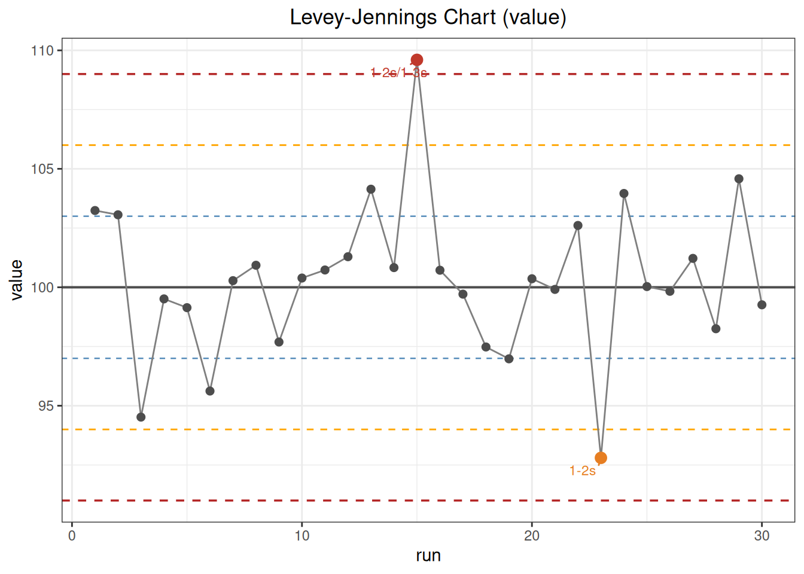
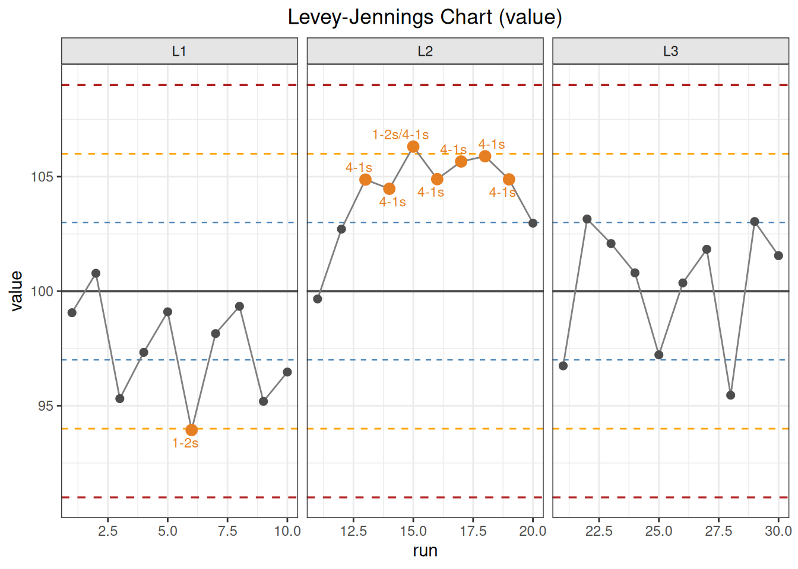
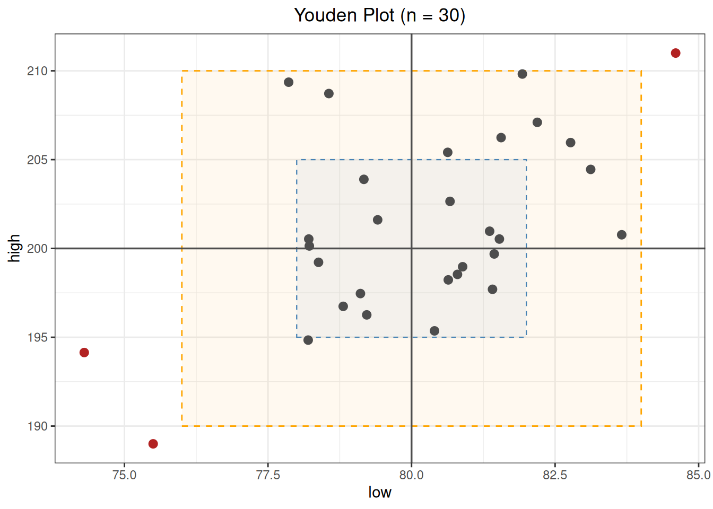

%%{init: {"theme":"base","themeVariables":{"primaryColor":"#EAF2FB","primaryBorderColor":"#2780E3","primaryTextColor":"#212529","lineColor":"#6C757D","secondaryColor":"#EAF7E6","tertiaryColor":"#FFF4E8","fontSize":"13px"},"flowchart":{"nodeSpacing":18,"rankSpacing":24,"padding":6}}}%%
flowchart LR
A["已批准的靶值、SD 和规则"] --> B["按实际时间顺序整理单水平 QC"]
B --> C["qc_chart()"]
C --> D["逐规则违例位置"]
C --> E["Levey–Jennings 图"]
F["同一运行的两个 QC 水平"] --> G["youden_plot()"]
G --> H["联合偏移与 ±2SD 矩形"]
D --> I["调查、纠正、验证与放行记录"]
E --> I
H --> I
classDef input fill:#EAF2FB,stroke:#2780E3,color:#212529
classDef process fill:#EAF7E6,stroke:#3FB618,color:#212529
classDef output fill:#F4EEFB,stroke:#9954BB,color:#212529
class A,F input
class B,C,G process
class D,E,H,I output
10 质量控制
本文演示如何使用 ivdtools 监控连续质量控制结果。当前功能包括列出已实现的 Westgard 规则、建立 Levey–Jennings 图并定位规则违例，以及用 Youden 图联合查看两个质控水平。
重要使用边界
本章的日常质控、换批标记和 Youden 数据均为确定性的教学数据，不是 CLSI EP23、EP26 或 EP33 的标准原始数据，也不用于建立通用接受标准。
qc_chart() 一次只分析一个数值序列。规则按数据框当前行顺序扫描，run 只提供图形横坐标，不会自动排序；group 只用于分面，也不会在组间重置连续规则。当前严重程度标签只把 1-3s 记为 out_of_control，其余规则违例统一记为 warning。因此 n_warn 和 n_oc 是软件显示分类，不等同于实验室多规则放行策略。
质量控制分析的统计单位和流程为：
代码
library(ivdtools)
library(readr)10.1 主要函数
| 函数 | 主要用途 | 主要结果 |
|---|---|---|
list_westgard() |
查看 qc_chart() 可识别的规则名称 |
命名规则说明向量 |
qc_chart() |
标准化单个 QC 序列、扫描规则并生成 Levey–Jennings 图 | 靶值、SD、逐规则位置、唯一违例点和绘图数据 |
print() |
打印 QC 或 Youden 对象摘要 | 目标量、样本量、规则或矩形外位置 |
plot() |
绘制相应结果对象 | Levey–Jennings 图或 Youden 图 |
youden_plot() |
联合查看同一次运行的两个 QC 水平 | Pearson 相关、±2SD 矩形外位置和绘图数据 |
10.1.1 查看规则 list_westgard()
调用形式
代码
list_westgard()
Westgard QC Rules
--------------------------------------------------
1-2s 1 point exceeds +/-2s (warning)
1-3s 1 point exceeds +/-3s (out of control)
2-2s 2 consecutive points exceed +/-2s (same side)
R-4s 2 consecutive points differ by at least 4s
4-1s 4 consecutive points exceed +/-1s (same side)
8x 8 consecutive points on same side of mean
10x 10 consecutive points on same side of mean
-------------------------------------------------- 当前源码的精确定义
设靶均值为 \(\mu_0\)、靶标准差为 \(\sigma_0>0\)，第 \(i\) 个结果的标准化偏差为
\[ z_i=\frac{x_i-\mu_0}{\sigma_0}. \]
| 规则 | ivdtools 判定条件 |
标记的点 |
|---|---|---|
1-2s |
\(\lvert z_i\rvert>2\) | 当前点 |
1-3s |
\(\lvert z_i\rvert>3\) | 当前点 |
2-2s |
相邻两点均 \(>2\)，或均 \(<-2\) | 该相邻窗口的两点 |
R-4s |
相邻两点各自满足 \(\lvert z\rvert\ge2\)，且 \(\lvert z_i-z_{i+1}\rvert\ge4\) | 该相邻窗口的两点 |
4-1s |
连续四点全部 \(>1\)，或全部 \(<-1\) | 该窗口的四点 |
8x |
连续八点全部 \(>0\)，或全部 \(<0\) | 该窗口的八点 |
10x |
连续十点全部 \(>0\)，或全部 \(<0\) | 该窗口的十点 |
不等号边界必须按表理解：1-2s、1-3s、2-2s 和 4-1s 使用严格“超过”，恰好位于 \(2s\)、\(3s\) 或 \(1s\) 不触发；R-4s 的单点门槛和两点极差使用“大于等于”。一个点可以同时出现在多条规则中，n_violations 对全部规则位置去重后计数。
警告多水平 Westgard 规则的边界
经典多规则方案可以在同一次运行的多个质控水平之间，或在同一水平的连续运行之间组合规则。当前 qc_chart() 只扫描传入的一个向量，R-4s 和其他窗口规则都按相邻行实现；它不会自动识别“同一次运行的两个水平”。多水平数据不能简单堆叠成一列后当作标准多水平 Westgard 判定。youden_plot() 可辅助查看两个水平，但也不执行跨水平 Westgard 拒绝规则。
10.1.2 单序列控制图 qc_chart()
调用形式
代码
qc_chart(
data,
value,
rules = "1-2s,1-3s,2-2s,R-4s,4-1s,10x",
mean = NULL,
sd = NULL,
group = NULL,
run = NULL
)
print(x)
plot(x)参数
| 参数 | 说明 |
|---|---|
data |
数据框；每行是序列中的一个 QC 结果。 |
value |
数值型 QC 结果列名。 |
rules |
一个逗号分隔字符串；只能使用 list_westgard() 列出的名称。默认不含 8x。 |
mean |
靶均值；NULL 时由当前完整数据估计。日常监控通常应显式传入已批准靶值。 |
sd |
正的靶 SD；NULL 时由当前完整数据估计。 |
group |
可选分组列，只用于图形分面；不分别估计目标量，也不重置规则窗口。 |
run |
可选横坐标列；NULL 时使用 \(1,\ldots,n\)。它不改变扫描顺序。 |
若不同质控品、批次或仪器需要各自估计目标量并独立重置规则窗口，应先用 split_by_factors(data, variable="...") 拆成具名数据列表，再对各子数据框分别调用 qc_chart()；不能用 group 分面代替独立分析。
计算与返回值
缺失 value 的行在计算前删除；run 和 group 同步保留对应完整行。若没有给出目标量，则使用全部完整结果的样本均值和样本 SD：
\[ \hat\mu=\frac1n\sum_i x_i,\qquad \hat\sigma=\sqrt{\frac{\sum_i(x_i-\hat\mu)^2}{n-1}}. \]
由同一监控序列估计目标量可能吸收正在发生的偏移并扩大控制限，因此只适合探索或建立阶段，不应在每次日常判定时滚动重估。
主要返回字段如下：
| 字段 | 含义 |
|---|---|
target_mean、target_sd |
实际用于标准化和画控制限的目标量 |
rule_vec |
实际扫描的规则及顺序 |
violations |
命名列表；每项是删除缺失值后的序列位置 |
n_violations |
所有规则命中位置去重后的数量 |
n_warn |
命中但未命中 1-3s 的唯一点数 |
n_oc |
命中 1-3s 的唯一点数 |
plot_data |
完整值、横坐标、分组、显示严重程度及规则标签 |
n_total、n_complete、n_miss |
原始、完整和缺失记录数 |
plot() 绘制靶均值以及 \(\pm1s\)、\(\pm2s\)、\(\pm3s\) 水平线，并标注命中规则的点。violations 中的位置是清理后序列位置，不一定等于原始数据行号；有缺失值时，应通过 plot_data$run 或原始运行标识追溯记录。
10.1.3 双水平联合图 youden_plot()
调用形式
代码
youden_plot(
data,
sample1,
sample2,
mean1 = NULL,
mean2 = NULL,
sd1 = NULL,
sd2 = NULL
)
print(x)
plot(x)参数
| 参数 | 说明 |
|---|---|
data |
宽格式数据框；同一行必须是同一次运行中的两个水平。 |
sample1、sample2 |
两个数值型 QC 水平列名。 |
mean1、mean2 |
两水平靶均值；省略时由完整配对数据估计。 |
sd1、sd2 |
两水平正的靶 SD；省略时由完整配对数据估计。 |
只保留两个水平都非缺失的完整行。标准化坐标为
\[ z_{1i}=\frac{x_{1i}-\mu_1}{\sigma_1},\qquad z_{2i}=\frac{x_{2i}-\mu_2}{\sigma_2}. \]
源码把
\[ \lvert z_{1i}\rvert\le2 \quad\text{且}\quad \lvert z_{2i}\rvert\le2 \]
定义为位于矩形内；只要一个水平严格超出 \(\pm2s\) 就列入 outside_rows。边界点仍属于矩形内。对象还计算两个原始结果列的 Pearson 相关：
\[ r=\frac{\sum_i(x_{1i}-\bar x_1)(x_{2i}-\bar x_2)} {\sqrt{\sum_i(x_{1i}-\bar x_1)^2\sum_i(x_{2i}-\bar x_2)^2}}. \]
主要字段包括 mean1、mean2、sd1、sd2、correlation、n_outside、outside_rows 和 plot_data。 outside_rows 是原数据行号，这一点与 qc_chart() 的清理后位置不同。
当前图形在原始量值尺度上绘制两个水平，并叠加 \(\pm1s\)、\(\pm2s\) 矩形。判断“两个水平同方向偏移”应比较 \((z_1,z_2)\) 相对中心的方向，不能把不同靶值、不同单位下的原始 \(y=x\) 参考线理解为两个水平应数值相等。correlation 和矩形外标记均为描述性结果，没有误差椭圆、联合概率检验或自动失控结论。
函数返回值
youden_plot() 返回双水平坐标、椭圆/限界和异常判定数据，并不可见地返回 ggplot 对象。
10.2 分析案例
10.2.1 已知靶值下的日常质控
读取 30 个按运行顺序排列的教学结果：
代码
qc_daily <- read_csv(
"./data/010-质量控制/qc-daily.csv",
show_col_types = FALSE
)
qc_daily <- as.data.frame(qc_daily)
dim(qc_daily)[1] 30 2代码
head(qc_daily) run value
1 1 103.24
2 2 103.06
3 3 94.52
4 4 99.51
5 5 99.14
6 6 95.62方案已规定靶均值 100、靶 SD 3，因此显式传入，不由监控期数据重新估计：
代码
qc_daily_fit <- qc_chart(
qc_daily,
value = "value",
rules = "1-2s,1-3s,2-2s,R-4s,4-1s,10x",
mean = 100,
sd = 3,
run = "run"
)
print(qc_daily_fit)
QC Control Chart
Value column: value
Mean (target): 100.0000
SD (target): 3.0000
N (total): 30 | Complete: 30 | Missing: 0
Rules applied: 1-2s, 1-3s, 2-2s, R-4s, 4-1s, 10x
Violations:
--------------------------------------------------
1-2s : points 15, 23
1-3s : points 15
-> 2 violation(s): 1 warning(s), 1 out of control第 15 点同时满足 1-2s 和 1-3s，最终只计为一个 out_of_control 点；第 23 点仅满足 1-2s，计为一个 warning 点。因此 n_violations=2、n_warn=1、n_oc=1。
代码
plot(qc_daily_fit)
10.2.1.1 已知目标量与数据内估计的差别
省略 mean 和 sd 后，函数会用这 30 个结果重新估计中心和离散程度：
代码
qc_daily_estimated <- qc_chart(
qc_daily,
value = "value",
run = "run"
)
qc_daily_estimated
QC Control Chart
Value column: value
Mean (target): 100.2890
SD (target): 3.2314
N (total): 30 | Complete: 30 | Missing: 0
Rules applied: 1-2s, 1-3s, 2-2s, R-4s, 4-1s, 10x
Violations:
--------------------------------------------------
1-2s : points 15, 23
-> 2 violation(s): 2 warning(s), 0 out of control数据内估计得到均值 100.2890、SD 3.2314；第 15 点不再严格超过新的 \(+3s\) 界限，因此显示分类从 out_of_control 变成 warning。这正是日常监控不应随当前批数据滚动更新靶值和 SD 的原因。
10.2.2 换批标记下的连续显示
该教学数据的前、中、后各 10 个点分别标为 L1、L2 和 L3；L2 存在人为整体偏移：
代码
qc_lot <- read_csv(
"./data/010-质量控制/qc-lot-change.csv",
show_col_types = FALSE
)
qc_lot <- as.data.frame(qc_lot)代码
qc_lot_fit <- qc_chart(
qc_lot,
value = "value",
mean = 100,
sd = 3,
run = "run",
group = "lot"
)
print(qc_lot_fit)
QC Control Chart
Value column: value
Mean (target): 100.0000
SD (target): 3.0000
N (total): 30 | Complete: 30 | Missing: 0
Rules applied: 1-2s, 1-3s, 2-2s, R-4s, 4-1s, 10x
Violations:
--------------------------------------------------
1-2s : points 6, 15
4-1s : points 13-19
-> 8 violation(s): 8 warning(s), 0 out of control1-2s 命中第 6、15 点；多个重叠的 4-1s 窗口使第 13～19 点均被标记。两类规则合并后共有 8 个唯一点，当前严重程度实现全部计为 warning。规则窗口跨 L1/L2/L3 的边界连续扫描；图形分面不改变这些位置。
代码
plot(qc_lot_fit)
10.2.3 双水平 Youden 图
每行是同一次运行的低、高两个 QC 水平：
代码
youden_data <- read_csv(
"./data/010-质量控制/qc-youden.csv",
show_col_types = FALSE
)
youden_data <- as.data.frame(youden_data)
head(youden_data) run low high
1 1 77.86 209.36
2 2 82.19 207.10
3 3 75.50 189.00
4 4 80.40 195.36
5 5 80.64 198.23
6 6 78.22 200.14代码
youden_fit <- youden_plot(
youden_data,
sample1 = "low",
sample2 = "high",
mean1 = 80,
mean2 = 200,
sd1 = 2,
sd2 = 5
)
print(youden_fit)
Youden Plot
Sample 1 (low):
Mean: 80.0000
SD: 2.0000
Sample 2 (high):
Mean: 200.0000
SD: 5.0000
Correlation: 0.5428
N (total): 30 | Complete: 30 | Missing: 0
Points outside +/-2SD: 3 (rows: 3, 17, 19)本例 Pearson 相关为 0.5428；原始第 3、17、19 行位于 \(\pm2s\) 矩形外。相关系数不决定是否失控，矩形外也只是定位提示。应结合每个运行的两个标准化偏差、单水平控制图、仪器事件和质控记录判断共同系统偏移还是单水平随机问题。
代码
plot(youden_fit)